Project Showcase
This website contain summaries of all projects that I've been develop in the past, present, and future. Updated monthly.
You can use the filter below.
2017
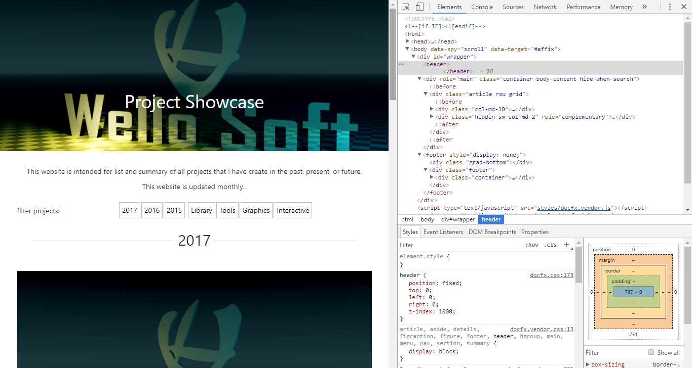
Expertise
Personal website to learn Web programming (this website!)Oct 2017 - Interactive - Active
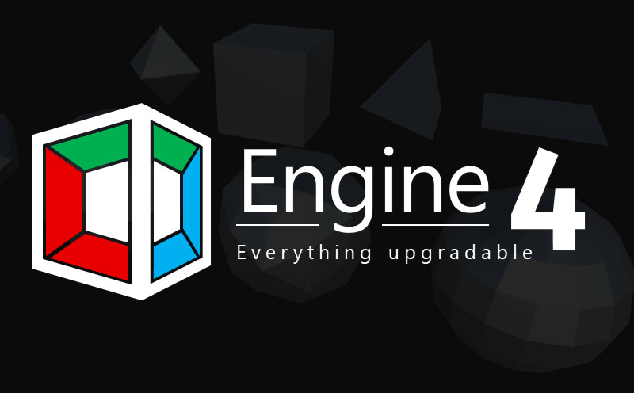
Engine4
A completely redesigned four dimensional library and toolkits for Unity.Oct 2017 - Library - In Progress
Badge Filmic
A static rendering for Wello Soft icon.Apr 2017 - Graphics - Archived
Hexaball
Learning to create HexaballApr 2017 - Graphics - Archived
Me Rasterized
An iconic rasterized photo for myself :)Feb 2017 - Graphics - Archived
2016
Xmas Lights
Learning light and effects in BlenderDec 2016 - Graphics - Abandoned
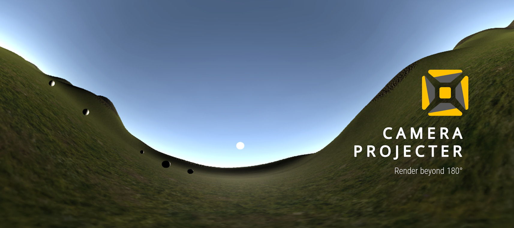
Camera Projecter
Camera shader packs to render beyond 180 degree in UnityOct 2016 - Library - Active
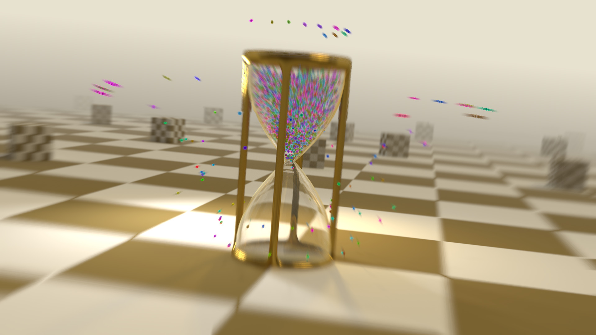
Beaker Drop
Short animation to test physics in Blender.Apr 2016 - Graphics - Archived
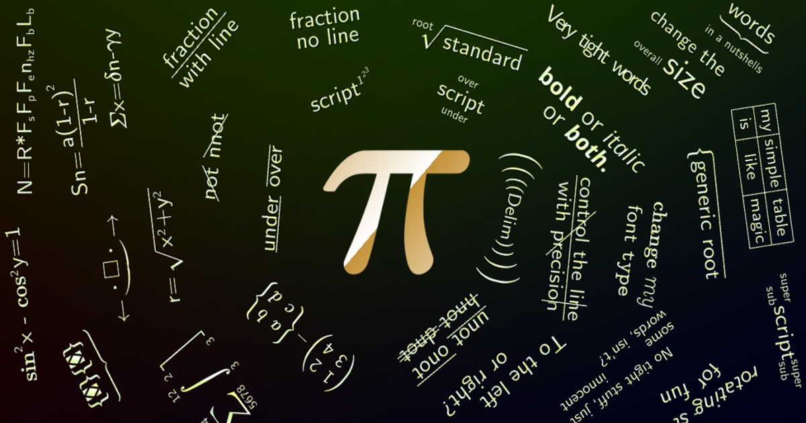
TEXDraw
A component to let you draw math expressions inside Unity Game Engine.Jan 2016 - Library - Active
2015
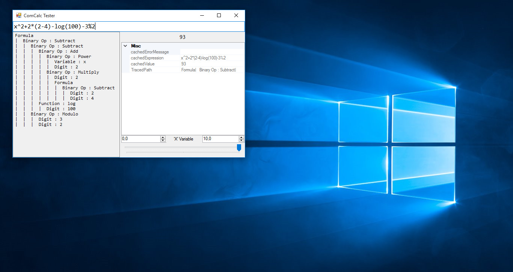
ComCalc
A managed library to evaluate math from stringDec 2015 - Library - Archived
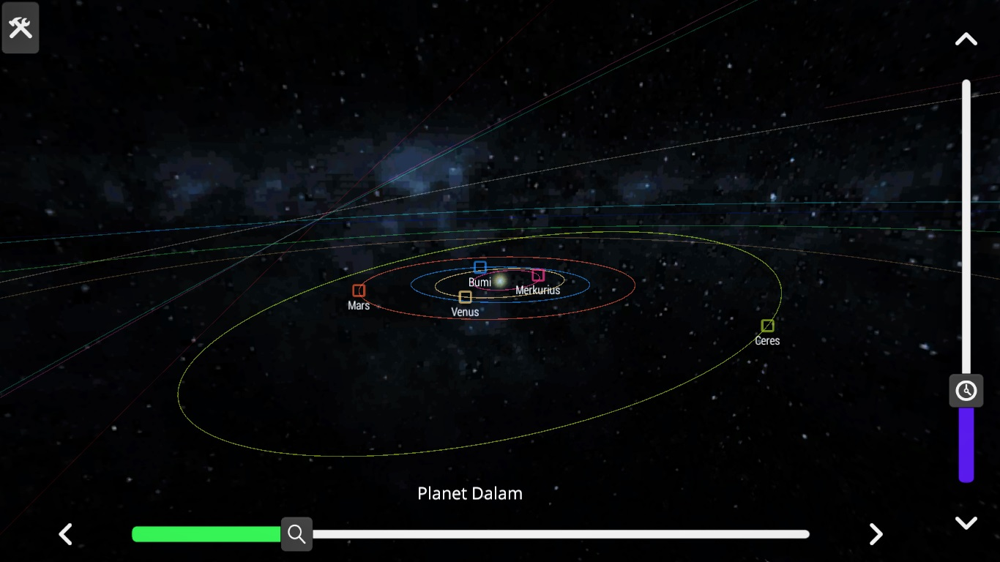
Observatory
A 1:1 scale of solar system in Unity Game EngineNov 2015 - Interactive - Archived
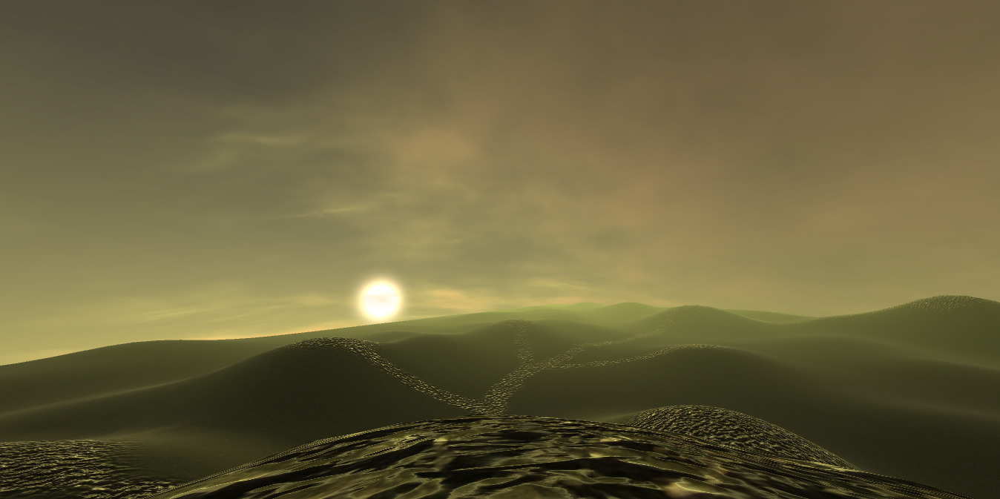
Simple Procedural Skybox
Shader library for complete produral skybox in Unity.Oct 2015 - Library - Archived
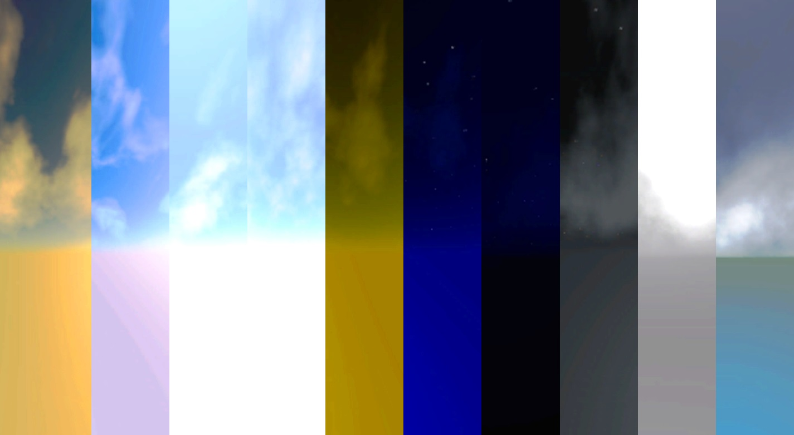
10 Skyboxes Day Night
Collection of static sky panoramas for games.Sep 2015 - Graphics - Archived
To The Highest Place
A 3D ball game to make you move to a higher level.Aug 2015 - Interactive - Archived
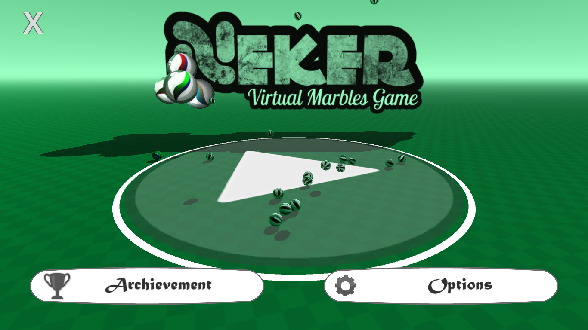
NEKER
A simple marble game, with simple AI.Jul 2015 - Interactive - Archived
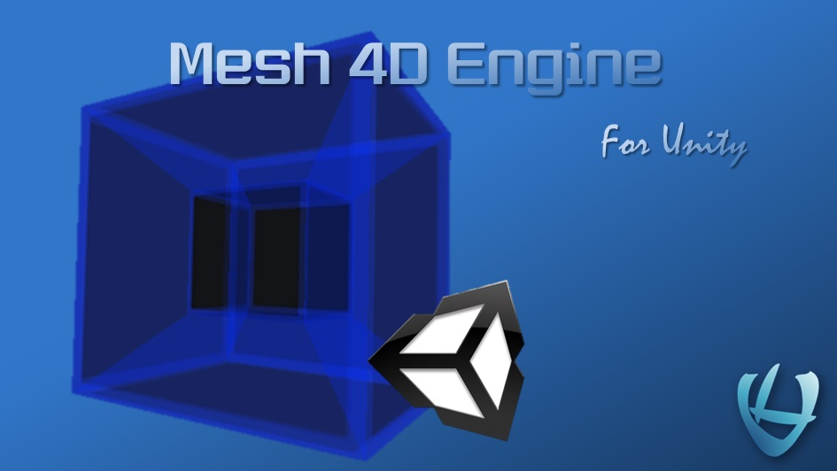
Mesh 4D Engine
A mesh morphing library that mimics 4D rotation.May 2015 - Library - Deprecated
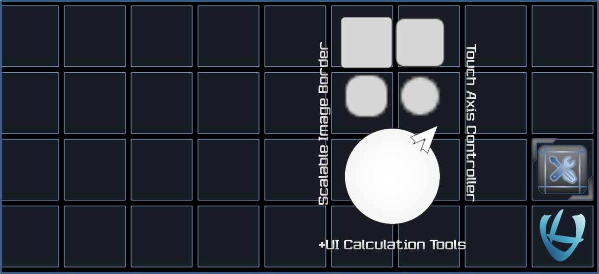
UI Tools
A 1:1 scale of solar system in Unity Game EngineApr 2015 - Library - Deprecated
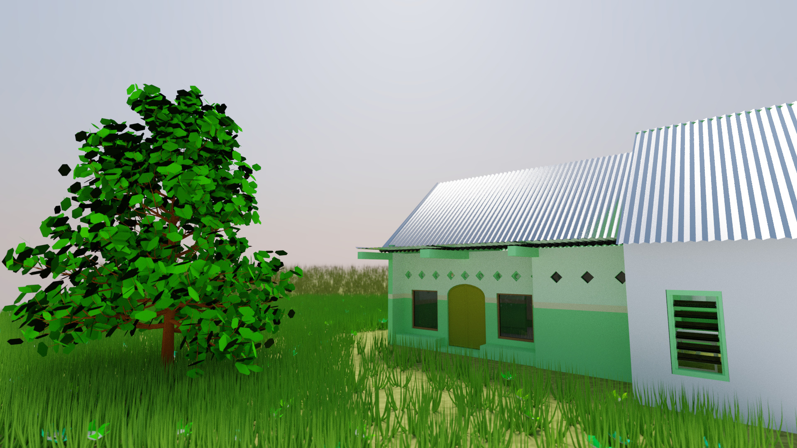
Home Remake
Learning architects in Blender (and my home!).Apr 2015 - Graphics - Archived
2014
2013
Total projects:
. Last update: Oct 23, 2017 06:46.
(C) 2017 Wildan Mubarok. CC-BY-SA-4.0. Git. Powered by DocFX.
Projects that I've contibute but not own does not appear here. Back to home.